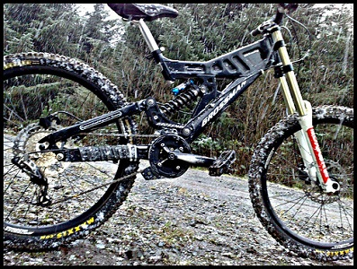

Life behind bars is amazing im obvioustly talking about Mountain biking, what do you think?.Have you ever felt compleatly free
MTB is my way of feeling free. I have had a few crashes and run ins with bad drivers so I reently bought a few cameras to mount the the front and rear of my bike
This website is for me to post photos, videos and blogs of my biking adventures.
Here is my bike it is a Grossman A-250 with RockShox World Cup Downhill Front Forks
and a rear Fox Shocks DHX 5.0. It might not be the best bike but I like it. Up front I have some Nukeproof warhead handle bars and lizard skin grips.

Hello
Here is one of my videos if you like it then check out my youtube channel where i have more videos i may also so some painting of bike's as I usually spray bikes for friends and family i also do alot of diffrent events during the year sutch as charity trator run's and i usually meet up with friends and we go on cycles to more entertaining places and sometimes we do stupid things.so come and joinme as we take over the internet (**joking) and rule the world (**not a joke).